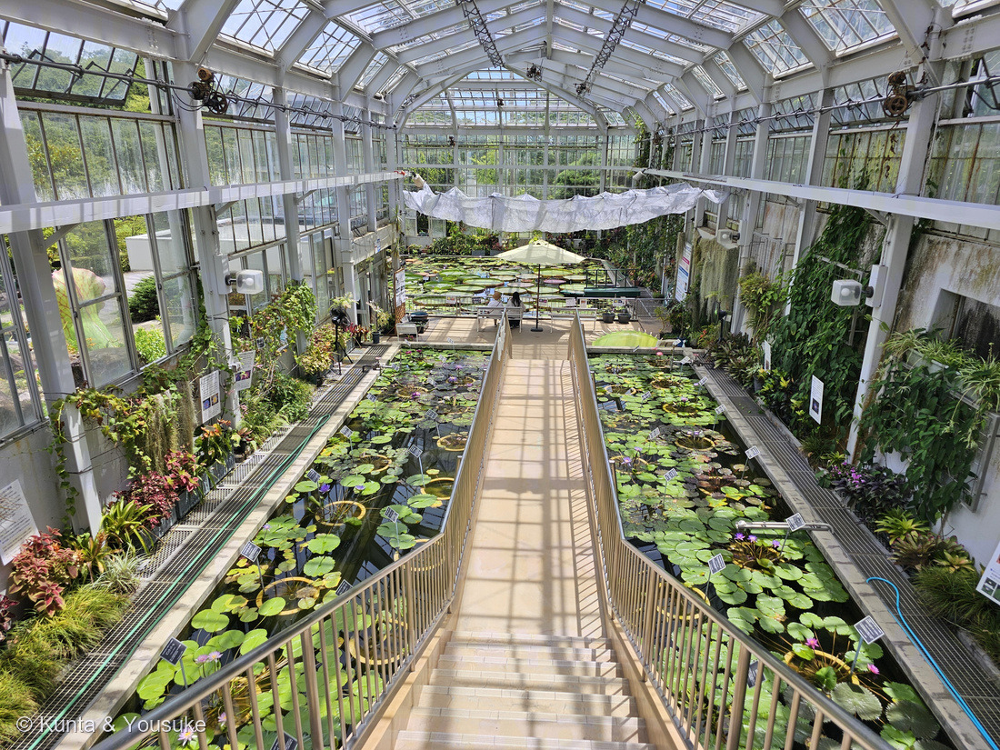
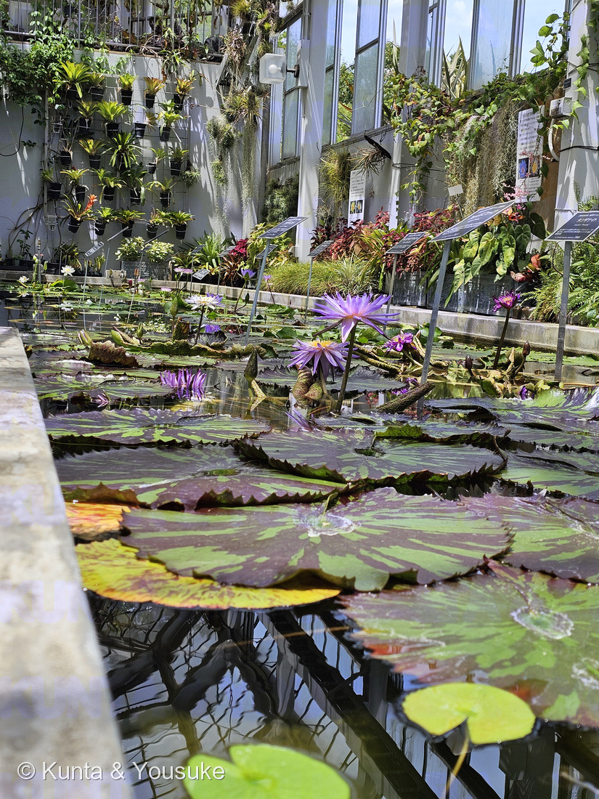
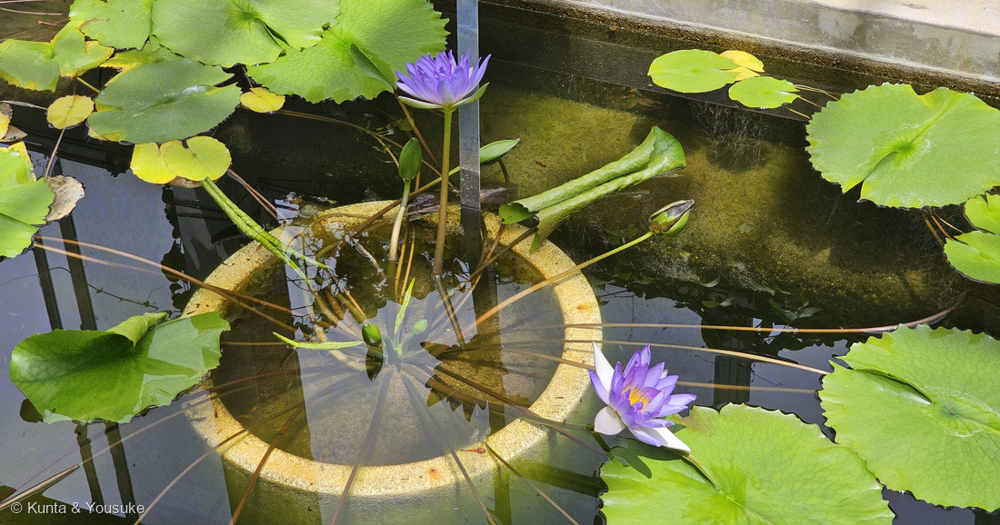
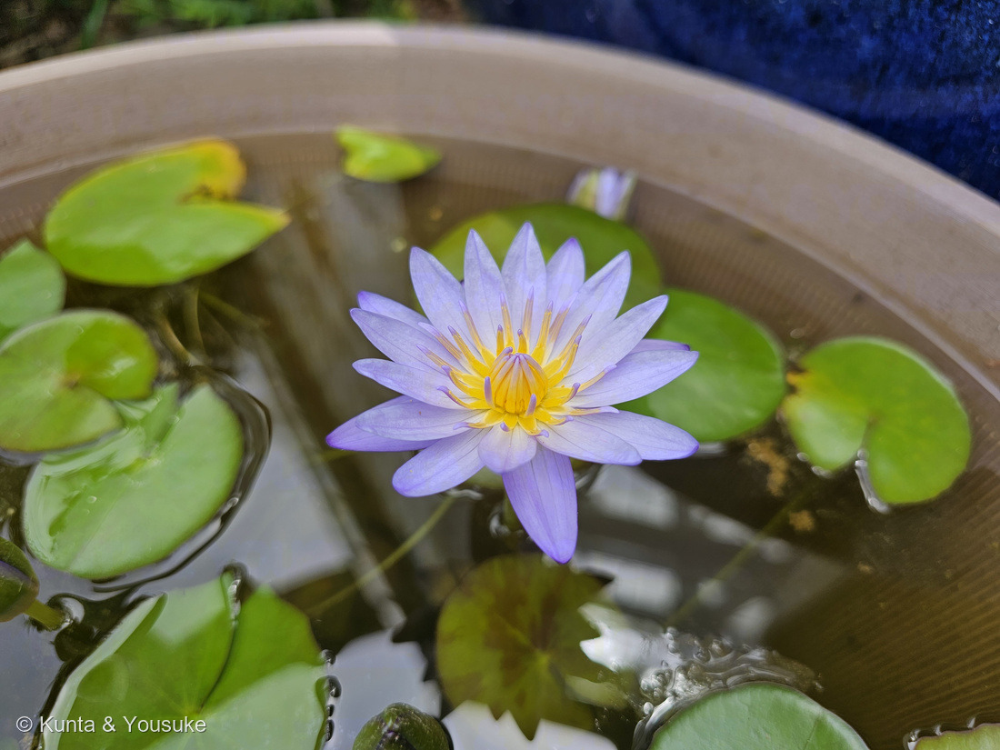
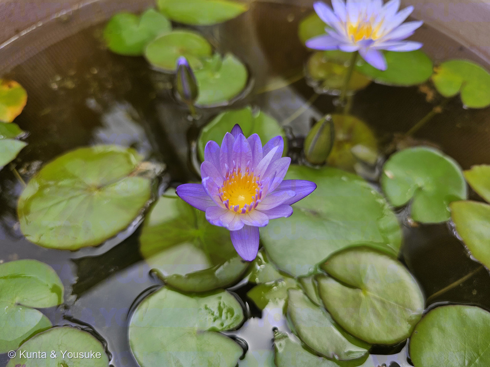
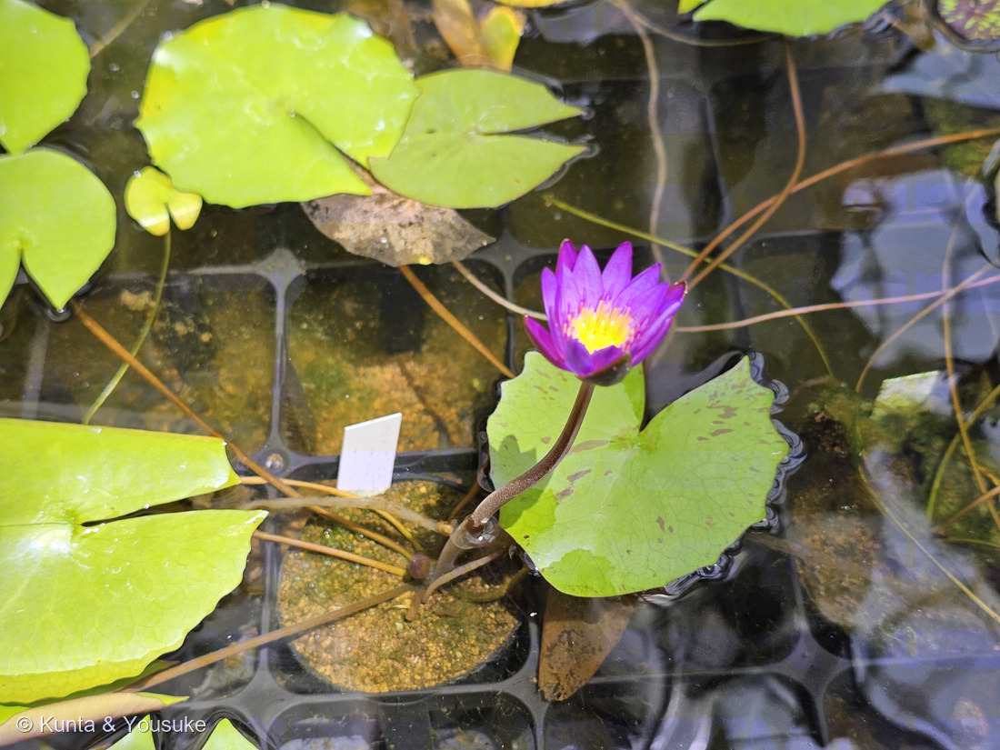

地図を読み込んでいるよ…
🔍 写真も地図も、押しているあいだ拡大して見られるよ（スマホは指を置いてすこし待ってね）。
🌍 の地図＝この子がもともと自生している場所を緑に。スイレン属は温帯にも熱帯にも広く分布する。この温室にいるのは、そのうち熱帯地域に分布する「熱帯スイレン」から、アメリカ南部や東南アジアで育種されてきた園芸品種と、広島市植物公園が自分で交配してつくった実生の株。日本に自生するスイレン属はヒツジグサ（Nymphaea tetragona）ただ1種で、北海道から九州のため池や湖沼にいる。
⭐緑は二つの意味でぬってあるよ。⭐⭐ひとつめ＝この温室の子たちのふるさとにあたる「熱帯」──園の解説板が「熱帯スイレンとは、スイレン科スイレン属（Nymphaea）の植物のうち、特に熱帯地域に分布するものです」と定義している。⭐ふたつめ＝日本──日本にはスイレン属がただ1種だけ自生している。⭐⭐⭐それがおまけのヒツジグサ（未草）。北海道から九州のため池や湖沼にいる子で、沖縄は分布に入っていないので塗っていないよ（日本語版Wikipedia）。⚠⚠そして、この地図はほんとうの分布より「せまい」──⚠スイレン属じたいは温帯にも熱帯にも広くいて、ヨーロッパにもアメリカにもオーストラリアにもいる。⭐園の板が「温帯性（耐寒性）スイレン」と「熱帯スイレン」を分けているのが、その証拠だね。⭐⭐ぜんぶ塗ると地球がほとんど緑になってしまうので、このページの主題である「熱帯」と「日本」だけにしてある。⭐⭐⭐それから、いちばん大事なこと──この池で咲いている花の色（青・紫・マゼンタ・桃）は、地図のどこにもない。園の板いわく「アメリカ南部や東南アジアで育種が盛んに行われ、たくさんの美しい園芸品種が作られています」＝⭐あの色は、人がつくった色なんだ。⭐しかもこの園は、自分でも交配して新しいスイレンをつくっている（写真⑥）。
⚠ 地図は国（日本と中国だけ県・省）までしか塗れないから、ほんとうの分布より広く見えていることがあるよ。地図はだいたいの場所。正確なところは、上の文を見てね。
スイレン（睡蓮）
Nymphaea spp.（スイレン属）
熱帯スイレン（Tropical Water Lily）／この池で名札を読めたのは「マーク・プーレン」（Nymphaea 'Mark Pullen'）と「ミロク（弥勒）」（Nymphaea 'Miroku'）の2枚だけ
スイレン科 · Nymphaeaceae（スイレン属）── 215 オオオニバスに続く2人目のスイレン科。スイレン目 Nymphaeales
燻太さんの一言「スイレンは品種も交配種もたくさんあって、全部は載せてあげられない。だから、全体が見える、階段上から撮った写真を一枚目にしてあげてほしい」── だから写真①は、一株の顔じゃなくて、この部屋の顔だよ
⭐⭐⭐ 名前と学名の由来 ── 水の妖精と、午後2時の草
- ⭐⭐⭐属名 Nymphaea は、ギリシア語の nymphaia（ニュンパイア）＝「水の妖精」から（日本語版Wikipedia「スイレン」）。⭐ニンフは、泉や川や湖にすむ精霊。⭐⭐この花は、その名前をもらっている。
- ⭐⭐和名「睡蓮」は、じつはこの属ぜんたいの名前ではなかった。——日本語版Wikipediaは「本来はヒツジグサの漢名であるが、日本ではスイレン属の水草の総称として用いられる」と書いている。⭐日本にいるただ一種の名前が、世界じゅうのなかまの名前になったんだ。
- ⭐⭐⭐そのヒツジグサ（未草）の名前が、また面白い。——「未の刻（午後2時）頃に花が咲くため」とされることが多いけれど、「この頃に花が閉じ始めるため」ともされる（日本語版Wikipedia「ヒツジグサ」）。⭐⭐そして園の解説板の時計を見ると、耐寒性スイレン（温帯のスイレン）がひらいているのは、朝8時ごろから午後2時ごろまで。⭐⭐⭐「閉じ始めるため」のほうと、ぴったり合っている。（⚠どちらが正しいと決める出典は見つけられなかったので、そう見えた、とだけ書いておくね。）
- ⭐「睡蓮」の「睡」は、ねむること。⚠夜に花を閉じるからだと言われるけれど、はっきり書いた出典には当たれなかったよ。
この植物のこと ── 2人目のスイレン科と、四つの時計
- スイレン科スイレン属の水草。⭐215 オオオニバスに続く、2人目のスイレン科だよ。⭐⭐同じ池の、同じ水に浮かんでいる親戚。
⭐⭐⭐ 園の解説板「水上に咲く魅惑の花 熱帯スイレン」が、まずこう教えてくれた。
「熱帯スイレンとは、スイレン科スイレン属（Nymphaea）の植物のうち、特に熱帯地域に分布するものです。昼開性の種（ブラキセラス亜属、アネクフェア亜属）と夜開性の種（ロータス亜属、ヒドロカリス亜属）があります。アメリカ南部や東南アジアで育種が盛んに行われ、たくさんの美しい園芸品種が作られています」
⭐⭐ そして園には、四つの時計をならべた板があった。「スイレンとオオオニバスの開花時間帯と開花時間（当園環境の場合）」。
- 昼開性 熱帯スイレン … 開花期は温室内で通年／⭐花がひらくのは 朝9時ごろ〜夕方4時ごろ
- 夜開性 熱帯スイレン … 開花期は温室内で通年／⭐夜7時ごろ〜翌朝9時ごろ
- 耐寒性（温帯）スイレン … 開花期は路地・温室内ともに初夏〜初秋／⭐朝8時ごろ〜午後2時ごろ
- オオオニバス類 … 開花期は温室内で晩夏〜春／⭐夕方5時ごろ〜翌朝8時ごろ（＝215の子）
⭐⭐⭐ 燻太さんがこの池にいたのは、お昼の12時半ごろ。——⭐だから、昼開性のスイレンだけが咲いていた。⭐⭐同じ池のオオオニバスがつぼみひとつ見せなかったのは、時計の色がちがったからなんだ。
- ⭐温帯のスイレンと熱帯のスイレンは、葉でも見分けられる。⭐日本語版Wikipediaは温帯スイレンについて「葉は全縁」とする。⚠写真⑥の葉は、ふちが細かく波打ってぎざぎざしている——⭐熱帯スイレンらしい顔だと思う（⚠ぼくの読みだよ）。
- ⭐⭐葉のかたちは、この属の名刺。——「葉身の基部は深く切れ込んで心形または矢じり形」（日本語版Wikipedia）。⭐⭐⭐105 ハスのページに書いた約束が、ここで果たされた＝ハスの葉は切れこみが無く、水面から高く立ち上がる／スイレンの葉は切れこみがあって、水面に浮く。⭐写真①③④⑤⑥のどの葉にも、その切れこみがちゃんと入っているよ。
⭐⭐⭐ 同定について ── 名前を「決めない」と決めた回
⭐⭐⭐ これは、燻太さんが決めたことなんだ。「スイレンは品種も交配種もたくさんあって、全部は載せてあげられない。だから、全体が見える、階段上から撮った写真を一枚目にしてあげてほしい」
- ⭐⭐だから写真①は、一株の顔じゃなくて、部屋ぜんたいの顔。——階段の上から見おろした、この温室の池そのもの。⭐そして、このページは「スイレン属の部屋」にした（209 ベゴニア・215 オオオニバスに続いて3つめ）。
- ⚠名札を読めたのは、2枚だけ。
- マーク・プーレン ── Nymphaea 'Mark Pullen'。園の名札は「1980年代作 熱帯性スイレン（昼開性）／チャールズ・ウィンチ氏によるウィンチ・コレクションのひとつ。熱帯性スイレンには珍しいふわりとした幅広の花びらを有する大型品種。／by Charls Winch 1986」。
- ミロク（弥勒） ── Nymphaea 'Miroku'。園の名札は「2013年発表。始めて熱帯性スイレンを育てるならまずこの品種といえるほど育てやすい。伸びやかな花弁が美しい／by Noriyuki Kato」。
- ⭐⭐⭐この2枚が並んでいるのが、面白いんだ。——'マーク・プーレン' は 1986年、チャールズ・ウィンチさんの作。⭐'ミロク（弥勒）' は 2013年、加藤憲之さんの作＝日本で生まれた品種で、名前は、未来にあらわれるという仏さまから。⭐⭐27年をへだてて、地球のちがう場所で作られた二つの花が、同じ池に浮かんでいる。
- ⚠⚠でも、名札のとなりの株を「その品種だ」とは書かない。——⭐理由がはっきりある＝マーク・プーレンの名札は「ふわりとした幅広の花びら」と言っているのに、同じ写真に写っている紫の花は、花びらが細くとがっている。⭐⭐名札と、そのすぐそばの花が、同じ子だとはかぎらないんだ。
- ⭐だからこの池のどの株も、種も品種も決めていない（203・209・215と同じ止め方だよ）。
- ⚠園の解説板と名札の写真は公開していない。⭐出典として引くだけにしてある（200で決めたルール）。⭐③は名札が同じ画面に入っていたので、その部分を外してトリミングしたよ。
⭐⭐⭐⭐ 「全部は載せてあげられない」 ── じつは、園も同じことを言っていた

⑥ 園が種から育てている、苗の容器。⭐黒いトレーの仕切りひとつひとつが、べつべつの株——ぜんぶ、園が自分で交配してつくった実生だよ。
⭐⭐⭐ これが、この回でいちばん驚いたこと。
園の解説板「熱帯スイレンの品種改良①」には、こう書いてあった。
「（当園には）スイレンの（マニ）アでもある（職員がいて）、（新しいスイ）レンを沢山みていただくため、品種改良を行っています。（その方）法として、スイレンを人工授粉させて得られた種子から新し（い個体を育て）、（両）親のよい性質を引き継いだ個体を選抜しています（交配育種）」
そして、そのとなりの板の最後は、こう結ばれていた。
「『毎年新しいスイレンを見ることができる施設』を目指して頑張ります」
- ⭐⭐⭐⭐毎年、新しいスイレンが生まれている。——⭐つまり、この池の顔ぶれは去年ともちがうし、来年ともちがう。⭐⭐「全部は載せてあげられない」のは、ぼくらが怠けているからじゃなくて、そもそも全部に名前がついていないからなんだ。
- ⭐⭐園はその難しさも、正直に書いていた（「熱帯スイレンの品種改良②」）。
- 「熱帯性スイレンの品種改良にチャレンジしている国内の植物園やフラワーパーク等の施設はほとんどありません」
- 「（種子）から発芽後の初期成育時がとても繊細で、順調に成長させるのが難しい」
- 「（暖か）い環境（20℃〜28℃）を整える必要がある」
- 「（育）てるためには広い場所が必要な植物である」
- ⭐⭐⭐そして写真⑥。——黒い育苗トレーの中に、小さな鉢がぎっしり。⭐赤玉土の上に、まだ小さな葉と、ひとつだけ咲いたマゼンタの花。⭐⭐板はこう書いている＝「熱帯性スイレンは成長が早い個体だと、発芽から4ヶ月程度（で咲きますが）／1年たっても花が見られない例もよくあります。この容器では発芽して3ヶ月から半年ほど経った苗たちを（育てています）が、それぞれが種子から育てた別個体ですので、葉だけをみ（ても、みんなちがいます）」
- ⭐⭐⭐⭐写真⑥のこの一輪は、たぶんこの世でまだ名前のない花なんだ。（⚠板の言う「この容器」がこの容器だと断定はできないけれど、板が立っていたのはこのトレーのすぐ上で、撮影の時刻は7秒しかちがわないよ。）
- ⭐⭐ぼく、この節を書いていてうれしくなった。——燻太さんが「全部は載せてあげられない」と言ったのと、園が「毎年新しいスイレンを見ることができる施設を目指す」と書いたのは、同じことの表と裏だったから。
⭐⭐⭐ 池に沈めた、バケツ ── 育て方が写真に写っていた
- ⭐写真③をよく見てほしいんだ。——水の中に、まるい輪がしずんでいる。⭐その輪のまん中から、葉柄と花の柄がいっせいに立ち上がっている。
⭐⭐⭐ あれは、鉢だよ。園の板「熱帯スイレンの品種改良②」に、こう書いてある。
「（一般）的にはバケツサイズの鉢に植え付け、それを池に沈めて育てるようなサイズのものが多い」
- ⭐⭐池に直接植えているんじゃなくて、鉢ごと沈めてある。——⭐だから品種を並べかえられるし、名札を株のとなりに立てられるし、冬に引き上げることもできる。⭐⭐写真①で池ぜんたいを見わたすと、水の中にまるい輪がいくつも沈んでいるのが分かるよ。
- ⭐写真④⑤の子は、池ではなく、地上に置かれた大きな鉢で咲いていた。——⭐板が「バケツ内でミニ栽培ができるものを目指した（品種）」と書いていたので、そのたぐいかもしれない（⚠名札が写っていないので、決めないでおくね）。
- ⭐⭐写真④は、花のつくりがよく見える一枚。——とがった花びらがぐるりと重なって、まん中に細い黄色のおしべがぎっしり。⭐その内側に、めしべの受け皿がある。⭐⭐園の板「品種改良①」には、ピンセットで葯から花粉を採る写真と、細い筆で花のまん中に花粉をつける写真がのっていた——⭐⭐⭐この黄色いまん中が、その仕事場なんだね。
参考：Wikipedia・スイレン（属名 Nymphaea はギリシア語の νυμφαία (nymphaia)＝水の妖精に由来／本来はヒツジグサの漢名であるが、日本ではスイレン属の水草の総称として用いられる／日本にはただ1種、ヒツジグサ（未草）のみが自生する／温帯スイレンは耐寒性があり、昼咲きで、葉は全縁／熱帯スイレンは耐寒性がなく、昼咲きの種と夜咲きの種がある／葉身の基部は深く切れ込んで心形または矢じり形）／Wikipedia・ヒツジグサ（Nymphaea tetragona Georgi (1775)／「未草」の名は未の刻（午後2時）頃に花が咲くためとされることが多いが、この頃に花が閉じ始めるためともされる／北海道から九州／中性から弱酸性、貧栄養から中栄養、または腐植栄養のため池や湖沼、水路などに生育／花期は6月から9月／直径3–7センチメートルの花が単生／4枚の萼片、多数の白い花弁と黄色い雄しべがらせん状／浮水葉は卵円形から楕円形、8–19 × 5–12 cm、基部は深く切れ込み、裏面は赤紫色を帯びる）／⭐広島市植物公園の解説板「水上に咲く魅惑の花 熱帯スイレン」「熱帯スイレンの品種改良①」「熱帯スイレンの品種改良②」「植物公園生まれのスイレンたち」「スイレンとオオオニバスの開花時間帯と開花時間（当園環境の場合）」、および池の名札「マーク・プーレン」「ミロク（弥勒）」（⚠掲示物なので写真は公開せず、出典として引くだけにしてある）
花言葉
- 日本で
- 清純な心／信頼／信仰
- 英語圏
- Water Lily — Purity of heart.（水のユリ ── 心の清らかさ）Kate Greenaway『Language of Flowers』1884
なぜ、そうなったか：⭐⭐日本と英語圏、べつべつの出典が、ほとんど同じところに着いた ── 「清純な心」と「Purity of heart（心の清らかさ）」。
⭐ 花言葉-由来は、その由来を二つ挙げている。ひとつは「朝に花を開き夕方に閉じるスイレンは、古代エジプトにおける太陽のシンボルとされ、装飾や神話に登場します。『信仰』という花言葉はこれに由来するとされています」。もうひとつは「白い花は一般的に『純潔』『清浄』を表現することが多く、野生のスイレンの大多数が白い花であることから、『清純な心』という花言葉が生まれました」。
⭐⭐⭐ ここが、このページとつながるところ。——花言葉のもとになったのは野生の白い花なのに、この温室で咲いているのは、青も紫もマゼンタも桃色もある。⭐その色は、ぜんぶ人が交配してつくったもの（園の板「人工授粉させて得られた種子から新し（い個体を育て）…選抜しています」）。⭐⭐「朝ひらいて夕方とじる」という、花言葉の土台になった性質のほうは、いまも変わっていないよ（園の時計の板＝昼開性は朝9時ごろ〜夕方4時ごろ）。
⚠ 古代エジプトで太陽とむすびつけられたのは、おもに青いスイレン（Nymphaea caerulea）だと言われる——⚠でも、そこまで書いた出典には当たれなかったので、ここは「そう言われている」までにしておくね。
参考：花言葉-由来・スイレン（清純な心／信頼／信仰／朝に花を開き夕方に閉じるスイレンは、古代エジプトにおける太陽のシンボルとされ、装飾や神話に登場します／白い花は一般的に「純潔」「清浄」を表現することが多く、野生のスイレンの大多数が白い花であることから、「清純な心」という花言葉が生まれました）／Kate Greenaway Language of Flowers(1884)・Project Gutenberg（Water Lily — Purity of heart.／原文を検索して確認した）